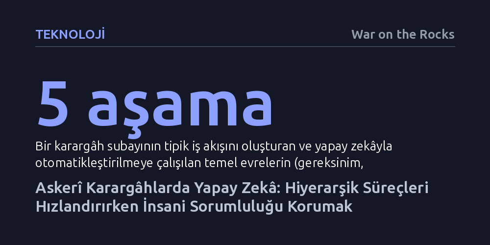

TEKNOLOJI · War on the Rocks · 2026-09-11
Ulusal güvenlik bürokrasisinde yapay zekâ ve çoklu ajan sistemleri, doğrusal iş akışlarını eşzamanlı hâle getirip görevlendirmeleri hızlandırabilir; ancak kurumsal sahiplik ve eleştirel muhakeme mutlaka insanda kalmalıdır. Aksi hâlde aşırı otomasyon, hatalı kararları dijital olarak meşrulaştırıp bürokratik sorumluluğu buharlaştırır.
Yapay zekânın bürokrasideki asıl gücünün personelin yerini almakta değil, hantal ve doğrusal onay zincirlerini eşzamanlı süreçlere dönüştürmekte yattığını, buna karşın nihai hesap verebilirliğin asla algoritmalara devredilemeyeceğini gösterir.

Modern ulusal güvenlik kurumları; katı hiyerarşiye, sıkı kurallara, uzmanlaşmaya ve yazılı belgelere dayalı klasik bürokrasilerdir. Bu tür yapılar, öngörülebilir ve rutin veri akışlarının bulunduğu ortamlarda kusursuz işler. Oysa stratejik karargâhlarda görev yapan subay ve sivil uzmanların masasına gelen meseleler nadiren öngörülebilirdir. Dış dünyadan gelen belirsiz, karmaşık ve soyut muhakeme gerektiren stratejik krizler, içerideki katı ve hantal onay süreçleriyle kaçınılmaz bir sürtüşme yaşar.
Bu gerilim, karargâh personelinin değişim hızına karşı duyduğu derin hayal kırıklığını besler. Günümüzde karar destek yazılımları ve gösterge panelleri gibi teknik araçlar mevcut olsa da, yapay zekânın bu süreçlere nasıl entegre edileceğine dair ortak kurumsal doktrinler henüz oturmuş değildir. Uygun kavramsal çerçeveler geliştirilmeden atılacak adımlar; yüksek stres altında otomasyon yanlılığına teslim olma, sahadan gelen bağlamsal içgörüyü kaybetme ve karmaşık karar anlarında ekip performansının çökmesi gibi ciddi riskleri beraberinde getirir.
Karargâhtaki tipik bir iş akışı beş temel aşamadan oluşur: görevin ortaya çıkması, görevlendirme, analiz, nihai ürünün hazırlanması ve uygulama takibi. Bu zincirin her halkası yapay zekâ otomasyonu için farklı potansiyeller ve tuzaklar barındırır. Yazarın Pentagon tecrübesinden aktardığı somut bir vaka, sürecin anatomisini net biçimde ortaya koyar: Ayrılmak üzere olan bir üst yöneticinin arkasında sorumlu bir temas kişisi bırakmadan imzaladığı muğlak bir talimat, beş aşamanın tamamında ölümcül hatalar vererek sessizce çökmüştür.
Bu başarısızlık zinciri, makinelerin nerede üstün nerede yetersiz olduğunu gösterir. Örneğin doğru ofisi belirleme ve görevlendirme aşamasında yapay zekâ; kurum içi yönergeleri, teşkilat şemalarını ve personelin geçmiş iş yükünü hızla tarayarak insandan çok daha isabetli ve hızlı rota çizebilir. Rutin yasal görevlerin takvime bağlanıp başlatılmasında da yapay zekâ hatasız işler. Ancak belirsiz bir talimatın analizi veya yeni bir stratejik yaklaşım geliştirilmesi, derin bir şüphecilik ve özgün düşünce gerektirir. Üstelik bir projenin uygulanmasını takip etmek salt veri konsolidasyonu değildir; bürokraside iş yaptırmak kurumsal öncelikleri ve insan psikolojisini kavramayı gerektirir. Yazarın veciz ifadesiyle, "otomasyon uygulamaya yardımcı olabilir ama insanları önemsemeye zorlayamaz."
Sonuç olarak aşırı otomasyon, hatalı kurgulanmış bir fikri düzeltmez; aksine insan hatasını pekiştirerek kötü bir girişimi dijital olarak meşrulaştırma riski taşır. Kurumların asıl hedefi, uygulanabilir eylemleri yapay zekâyla güçlendirirken çalışmayacak fikirlerin kurumsallaşıp kemikleşmesini engellemek olmalıdır.
Yapay zekânın karargâh işleyişine getirebileceği en köklü yenilik, adımların sırayla atıldığı katı doğrusal modelden eşzamanlı süreçlere geçiştir. Geleneksel bürokrasi 'önce bu, sonra şu' mantığıyla ilerler; bir aşama bitmeden diğeri başlamaz ve evraklar haftalarca birimler arasında sürünür. Çoklu ajan orkestrasyonu bu gecikmeleri ortadan kaldırabilir. İnsan denetimi altında paralel çalışan uzmanlaşmış modellerden biri uygulanamaz görevleri henüz başında ayıklarken, diğeri hedefleri netleştirip analiz yapabilir, bir diğeri ise ilgili paydaşları önceden uyararak bürokratik sürtünmeyi en aza indirebilir.
İkinci ve daha radikal dönüşüm ise sürecin soruna uyarlanmasıdır. Bürokrasiler çoğu zaman dış dünyadaki sorunları kendi kalıplaşmış iç süreçlerine uydurmaya çalışır. Oysa iyi eğitilmiş bir yapay zekâ sistemi, karar gecikmesinin maliyetinin eksik koordinasyon maliyetinden daha ağır bastığı kriz anlarını tespit edebilir. Bürokratik egosu bulunmayan bir algoritma, görevin hızla başarılması uğruna gereksiz onay makamlarını süreçten çıkararak kararların komitelerde boğulmasını engelleyebilir.
Ancak bu esneklik, paydaşların dışlanması ve kurumsal düşünce tekdüzeliği gibi ciddi riskler doğurur. Bu dengeyi korumak için süreç önceliklendirmesinin, denetimi zor kara kutu modeller yerine açık mantık zincirlerine ve insan tarafından yazılmış kurallara dayanan kural tabanlı sembolik yapay zekâ araçlarına bırakılması gerekir. Böylece risk devrinin izlenebilirliği korunur.
Doğal dil modellerinin kullanım kolaylığı, kurumları personelin eğitimini ihmal etmeye itebilir. Oysa yapay zekâ araçları doğaları gereği ahlaki ve hukuki sorumluluk taşıyamaz. Gelecekte bürokratların sorumluluktan kaçmak için 'bilgisayar böyle yaptı' savunmasına sığınması, sağlıklı bir devlet yönetimi için kâbus senaryosudur. Bu nedenle karargâh personelinin modellerin nasıl çalıştığını, nerede halüsinasyon görebileceğini ve otomasyon yanlılığına nasıl direnileceğini öğrenmesi şarttır. Teknik uzmanlar ile karar vericiler arasındaki uçurumu kapatacak köprü personele yatırım yapılmadığı takdirde, karar alma gücü teknokratik seçkinlerin tekeline girebilir.
Tüm bu dönüşümün önündeki en somut pratik engel ise gizlilik ve güvenlik sınıflandırmalarıdır. Tasnif dışı sistemlerde onlarca veri kaynağını birleştiren yapay zekâ çözümleri hızla yaygınlaşırken, gizli ve çok gizli ağlara entegrasyon çok daha zordur. Dış dünyadan tamamen yalıtılmış ağlar, farklı mimariler ve katı güvenlik protokolleri nedeniyle gizli seviyedeki karargâh otomasyonu kaçınılmaz olarak tasnif dışı sistemlerin gerisinde kalacaktır.
Son tahlilde bürokrasi, karar süreçlerine disiplin getiren bir mekanizmadır ancak doğası gereği kendini büyütmeye ve fazlalık üretmeye meyillidir. Yapay zekâ otomasyonu karargâhlardaki bu bürokratik aşırılığı törpüleyebilir; fakat bu hızın ve gücün hangi amaca hizmet edeceğine yalnızca insan muhakemesi karar verebilir.